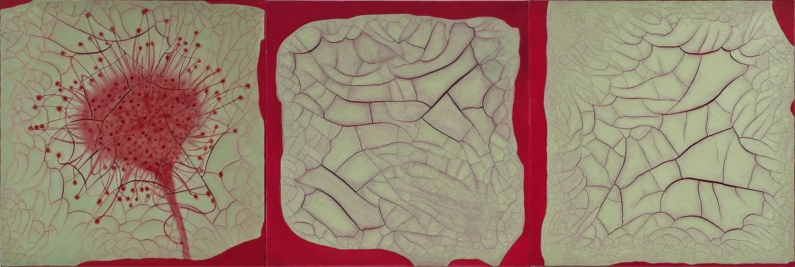

Tile Triptych Reflection
Inspiration
My carnivorous plant tile triptych was inspired by the idea of confusion, repulsion, and also beauty in art. From some student examples and also from artist Adriana Varejão, I was drawn to how their pieces were influenced by both the beauty and ugliness in nature. I decided to go with a plant to convey these emotions also because of my own influences, including my venus fly trap plant at home and also my love of the show Stranger Things.
Composition
I decided to make each tile rectangular to keep the focus on the subject of the tiles, not on the background. I especially wanted to place emphasis on the top tile because it houses the ‘face’ of the plant. The bottom tile is the next important, as it holds the grounds of the plant and where it began. Thus, the middle tile is the smallest because it is the transitional state. One way I could improve upon the composition of my next project is to plan out the middle transitional tile before making it next time.
Texture
I used relief to emphasize specific parts of the composition, such as the teeth of the plant and also its leaf hands appearing to reach for the viewer. Using textures greatly enhanced my composition because they added and extra element of harshness to my tiles that a smooth surface would not have achieved. However, I do wish that I had explored with some other tools more. This project was one where my goal was to be jarring, so being more adventurous with textures would only have pushed that further.
Color
I chose mostly green tones to go in my triptych tile to stick with the idea that my subject is a plant. However, the soil and the mouth are vastly different than the greens. All of these colors worked successfully in my design, and I love how the glaze enhanced the teeth of the beast. The green shades on each tile bring them together, and the darker shades provide some contrast. The darker shades are also placed on the bottom and top tiles to provide unity between all three pieces because they hold the entire form together in between the two colors.
Principles of Design
Rhythm and movement was achieved through the story I told in my tiles-from a sprout, to a teenaged plant, then an adult carnivore. Secondly, I achieved emphasis through my use of texture, relief, and color. There is much emphasis placed on the head of the carnivorous plant. Also, I achieved pattern in both the backgrounds of each tile as well as the 5-point star face that the plant has. Lastly, unity is achieved through the use of color and texture. The same colors are used in each tile, which unifies them in a way. Additionally, the textured background unifies each of the tiles.
Craftsmanship
Although I was at first worried about my piece not being as smooth as I wanted, I found a new technique for smoothing smaller areas with the help of Professor Fischer. And while I have worked with clay before, it seems that clay is a widely variable medium. I learned much about the stages of clay and how each has an important role regarding craftsmanship.Additionally, I learned a lot about the craftsmanship of glaze. My project, being very high relief, was hard to glaze at times and some parts may not have been as full coverage as I wanted.